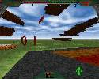
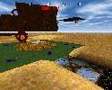
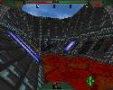

Operation Twilight Zone is a new mission for Terra Nova. It is still under
developement, so only a small preview is available. The mission will
contain new textures and a completly new game play (feels like running in a
dream). More is not yet known... ;)
Preview images of the Operation Twilight Zone:




System Shock - Dream Tube


Editor Shots:


last modified: 28th of July 99 - 15:08cet